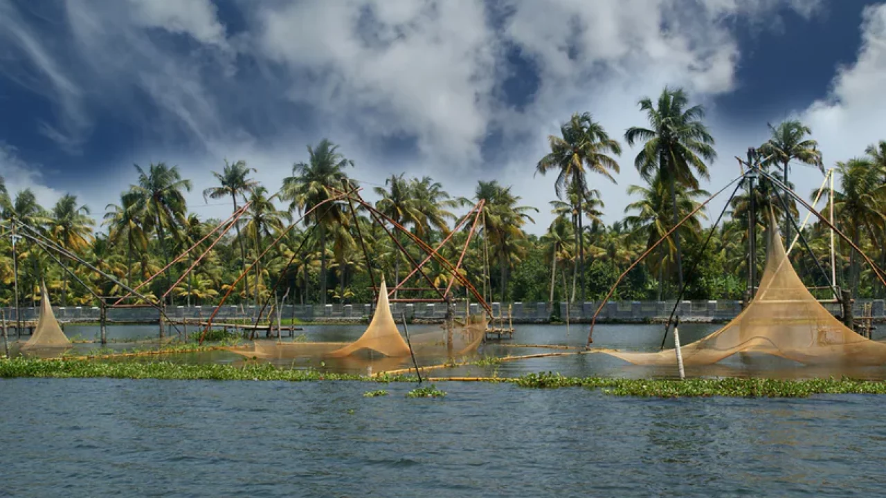

TOP 5 NATURAL PLACES TO VISIT IN INDIA.
1-THE ELEPHANT FALLS

Named after an Elephant like stone at its foot, the Elephant Falls are amongst the most popular
falls in the North-East, situated next to Shillong. It is a tourists' paradise with three layers of the
falls accessible to the layman from different vantage points.
The breathtaking Elephant falls were referred to as 'Ka Kshaid Lai Pateng Khohsiew' by the local Khasi
people, which means 'The Three Step Waterfalls', as these falls consist of three mesmerising falls in
succession.Out of the three, the third waterfall tends to strike the visitors as the most impressive.
Elephant Falls is a great stopover destination before one heads for further journeys into Meghalaya. Located
12 km away from the capital city of Shillong, it is one of the most visited falls in the beautiful state.
2-PANCHMARHI

Pachmarhi, also known as Satpura ki Rani, is a hill station in the central Indian state of Madhya Pradesh. Its many waterfalls include Apsara Vihar, with its calm pool, and soaring, single-drop Silver Fall nearby. The Bee Fall tumbles over a jagged rock face to the northwest. Leopards and Indian bison live in Satpura National Park.Pachmarhi is famous for its honey and other ayurvedic medicines
3- MUNNAR

Munnar is a town in the Western Ghats mountain range in India’s Kerala state. A hill station
and former resort for the British Raj elite, it's surrounded by rolling hills dotted with tea plantations
established in the late 19th century.Virgin forests, savannah, rolling hills, scenic valleys, numerous streams, huge splashy waterfalls, sprawling tea plantations and winding walkways are all part of the great holiday experience on offer for a traveler to Munnar. Munnar is also known for Neelakurinji, a rare plant which flowers only once in twelve years.
4-VEMBANAD LAKE

Vembanad is the longest lake in India, as well as the largest lake in the state of Kerala. The lake has an area of 230 square kilometers and a maximum length of 96.5 km.
The Nehru Trophy Boat Race is conducted in a portion of the lake.A unique characteristic of the lake is the 1,252 metres (4,108 ft)-long Thanneermukkom salt water barrier constructed as a part of the Kuttanad Development Scheme to prevent tidal action and intrusion of salt water into the Kuttanad low-lands.
It is the largest mud regulator in India and essentially divides the lake into two parts.
5- Ellora Caves

Ellora Caves are a rock-cut Hindu temple cave complex, with artwork dating from the period 600–1000 CE, located in the Aurangabad District of Maharashtra, India.[1] Ellora is a UNESCO World Heritage Site.
There are over 100 caves at the site, all excavated from the basalt cliffs in the Charanandri Hills, 34 of which are open to public. These consist of 17 Hindu (caves 13–29), 12 Buddhist (caves 1–12) and 5 Jain (caves 30–34) caves. Each group represents deities and mythologies prevalent in the 1st millennium CE, as well as monasteries of each respective religion. They were built close to one another and illustrate the religious harmony that existed in ancient India.